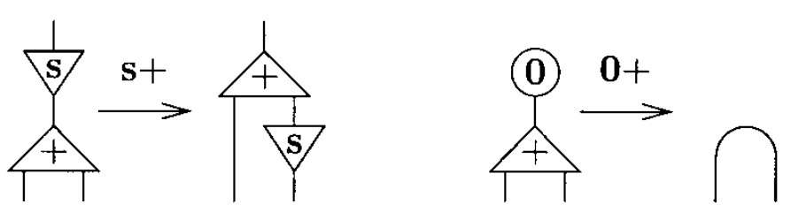

Interaction nets are a graphical model of computation.
This page is a superficial but gentle introduction to Yves Lafont's paper Interaction Combinators paper, where the definition of programming jargon was inlined to make the subject of the paper more approachable.
Interaction nets are an important model of computation for several reasons:
- All aspects of a computation are captured by the rewriting rules. No external machinery such as copying a chunk of memory, or a garbage collector, are needed. Interaction nets are amongst the few formalisms which model computation where this is the case, and consequently they can serve as both a low level operational semantics and an object language for compilation, in addition to being well suited as a basis for a high-level programming language.
- There is growing evidence that interaction nets can provide a platform for the development of parallel implementations, specifically parallel implementations of sequential programming languages. Using interaction nets as an object language for a compiler offers strong evidence that the programming language being implemented may be executed in parallel.
An agent(a) has one principal port and a number of auxiliary ports(n). A pair of agents connected together on their principal ports is called an active pair.

A net is a graph of cells and where each port is connected to another one by means of a wire. The following net has three free ports, x, y, and z. Note that a wire may connect two ports of the same cell.

Addition
An unary operation is an operation with only a single input. Examples of unary operations are: increment, decrement, absolute, not, etc.. The successor operation(S) just sends a natural number to the next one.

Since addition and multiplication are defined by induction on their first argument, we shall always plug this argument into the principal port.
sx + y = s(x + y) 0 + y = y
Multiplication
When defining multiplication, note that the argument y is used twice in the first equation, and it is not used at all in the second one. For that reason, two extra symbols areneeded duplicate and erase.
sx * y = (x + y) + y 0 * y = 0

The idea is that a net representing a natural number should be duplicated when it is connected to the principal port of a duplicate, and it should be erased when it is connected to the principal port of an erase.

The system of interaction combinators consists of three symbols, called combinators: y(constructor), d(duplicator), and e(eraser). The six interaction rules below are of two kinds: commutation when the two cells carry different symbols (yd, ye, de) and annihilation when they carry the same symbol (yy, dd, ee).

Note that the annihilations for y and d are not the same. Furthermore, if one numbers the auxiliary ports, one realizes that it is yy, not dd, which exchanges the ports:

Rewriting
Here, rewriting is just a convenient language to express a very concrete notion of interaction, which we shall make precise by requiring some properties of rules. The first one is in fact imposed by our option of nets (as opposed to trees or directed graphs):
- Inside a rule, each variable occurs exactly twice, once in the left member and once in the right one.
- Agents interact through their principal port only
- There is al most one rule for each pair of distinct symbols S, T, and no rule for S, S.
| Rule 1 | Rule 2 |
|---|---|
 |
 |
A simple net, representing S(0) + S(0) is shown below, where one active pair has been generated. We then show two reductions, which use the previous two rules. The final net, on the right-hand side, is of course the representation of 2, which is the expected answer.

The fundamental laws of computation are commutation and annihilation.
- Inpla, Interaction Nets as Programming Language
- Towards a Programming Language for Interaction Nets
- An Implementation Model for Interaction Nets
- Interaction Nets Playground
- Bologna Optimal Higher-Order Machine